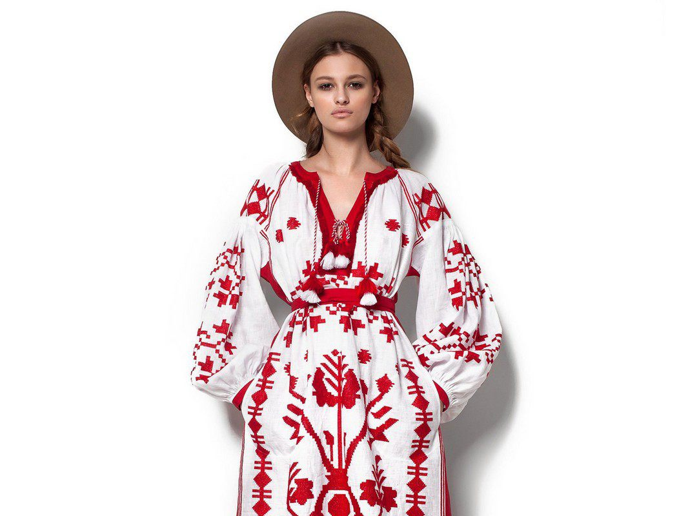

Vyshyvanka probably will be your main purchase, so we wanna share some interesting facts. A few years ago, before the well-known Ukrainian events, the designer Vita Keen released a unique collection, which included long handmade embroideries. It was supposed to wear them as dresses: the models looked simply stunning, and today Vita's collections can be purchased in the best department stores in the world. Moreover, she was spoken about in Vogue which infrequently pampers designers from the post-Soviet space. Thus, Ukrainian embroidery appeared on the world market. Moreover, the print is traditional, not simply interpreted. The price of such designer cloth is rather high; tourist with an average income is likely to buy such dress-embroidery only as a gift.
Such gifts in the Ukrainian style will suit mostly girls and women. There are wreaths with flowers both colorful and with ribbons – suitable only for national costumes, and quite casual or evening style. If you look carefully, you can find the handmade necklaces of stunning beauty.
If you are interested in designer bags created in Ukraine, then look for models with the label Kofta. Konstantin Kofta, designer from Ukraine creates things that cannot be forgotten. His style is so recognizable that you will see shoes or bag of this brand among a thousand others. Everything is very sensual and elegant. Konstantin mostly uses irregular forms and rough skin. To some extent, Kofta epitomizes: his last collection, for example, is dedicated to human fear.
Mace - symbol of power. In ancient times the mace was a weapon of Cossacks. Today, the mace means power, and Ukrainian presidents put one hand on the Constitution of Ukraine during the inauguration, and in the other they hold a mace.